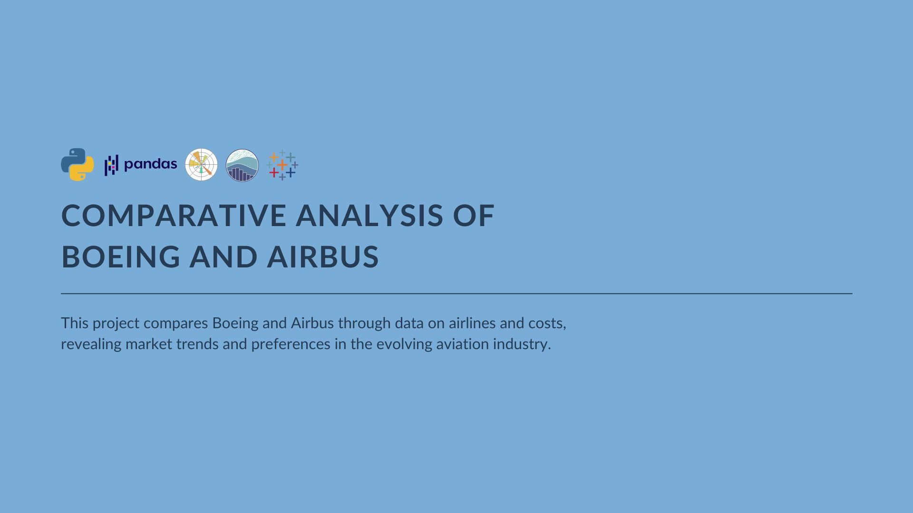
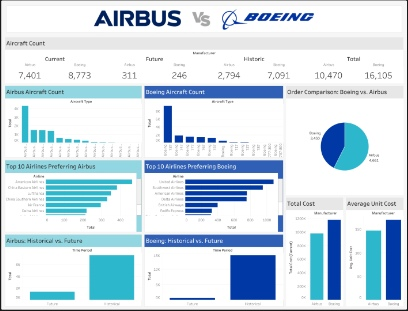

Comparative Analysis of Boeing and Airbus

Title
Comparative Analysis of Boeing and Airbus ✈
Description
The project focused on a comparative analysis of two aviation giants, Boeing and Airbus. Using a dataset containing details about various airlines, aircraft types, costs, and historical data, the project aimed to uncover insights into the market presence and financial aspects of both manufacturers.
Visualizations were generated using both Matplotlib and Seaborn to compare aircraft counts, costs, and other metrics. The analysis revealed Boeing's historical dominance, Airbus's rising traction, cost dynamics, and airline preferences for both manufacturers. The study emphasized the importance of continuous analysis in the evolving aviation landscape.
Skills
- Data cleaning and pre-processing
- Descriptive statistics
- Comparative analysis
- Data visualization: pie charts, bar chart
- Dashboard for aviation overview
Tools
Dataset
⌁ Airline Fleets
Notebook
Project notebook and analysis for the comparative study of Boeing and Airbus.
github.com/minjonyfilm/comparative-analysis-of-boeing-and-airbusDashboard

Tableau dashboard for aircraft counts, airline preferences, and cost comparison.
Public Tableau visualizationResults
- Identified historical and current trends related to Boeing and Airbus's market presence.
- Uncovered financial insights about aircraft ownership costs and unit costs.
- Provided strategic insights for airlines and industry stakeholders based on analysis findings.